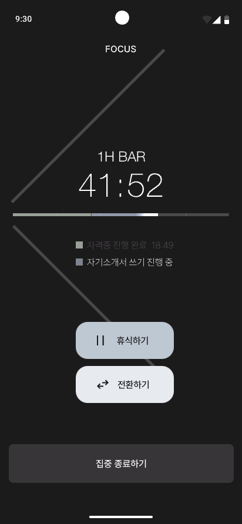

Motif System
시간은 막대에서 꽃으로.
막대 하나(1H)가 모여 2H · 4H · 6H · 8H 포커스 모티프가 됩니다.
Motion Poster
점이 막대가 되고,
다시 선택으로.
가로 모션 포스터 시퀀스 — 중심에서 피어나고, 라인업으로 펼쳐진 뒤 하나씩 호버됩니다.
-
01
Point
화면 중앙의 작은 점에서 시작합니다.
-
02
Radial grow
1 → 2 → 4 → 8 막대가 방사형으로 자랍니다.
-
03
Rewind & bloom
겹치며 되감긴 뒤, 8H만 중앙에서 피어납니다.
-
04
Lineup & select
1H–8H가 펼쳐지고, 왼쪽부터 선택 힌트가 이어집니다.
1920 × 1080 · FOCO_MOTION_POSTER
In product
타이머 위에 앉는 언어.
같은 모티프가 포커스 타이머 UI에서도 시간과 상태를 읽게 합니다.

집중을 위한 형태. 모션으로 이어집니다.